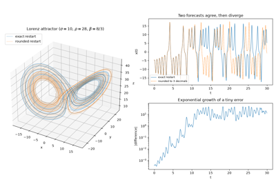

Breakthroughs in Dynamical Systems#
“It may happen that small differences in the initial conditions produce very great ones in the final phenomena.” – Henri Poincaré, Science et méthode, 1908
A dynamical system’s qualitative behavior – does it settle down,
spiral in, oscillate forever, or wander chaotically? – can often be
understood without solving its equations exactly. This chronology
traces the ideas behind mathematicskit.ode_dynamics: the
classification of linear flows near a fixed point, the discovery of
self-sustained oscillation, and the slow, then sudden, realization that
simple deterministic systems can behave unpredictably.
1838 – Verhulst’s Logistic Equation#
Thomas Malthus had argued that populations grow geometrically. Pierre-François Verhulst noted that resources are limited. He proposed that the per-capita growth rate should decline as the population approaches a ceiling, the carrying capacity \(K\):
This was one of the first nonlinear differential equations used to model a real population, and one of the few that can be solved exactly. Its S-shaped “logistic” solution grows fastest at \(N = K/2\) and levels off at \(K\). The stable fixed point \(N = K\) and the unstable fixed point \(N = 0\) make it the standard first example of one-dimensional phase-line analysis.
Implementation: mathematicskit.ode_dynamics.systems.population.LogisticGrowth
integrates the equation, and
logistic_growth_solution()
evaluates Verhulst’s closed form. The tests check that the two agree to
about \(10^{-8}\).
References: P.-F. Verhulst, “Notice sur la loi que la population suit dans son accroissement,” Correspondance Mathématique et Physique 10 (1838), 113-121.
1881-1886 – Poincaré’s Qualitative Theory of ODEs#
Henri Poincaré’s series of memoirs “Sur les courbes définies par une équation différentielle” founded a new way of studying differential equations. Instead of seeking a closed-form solution, he studied the qualitative structure of the flow directly in the phase plane. He classified fixed points as nodes, saddles, spirals (foci), or centers according to the eigenvalues of the linearized flow, the basis of the trace-determinant classification still taught today.
Implementation: mathematicskit.ode_dynamics.systems.stability.classify_fixed_point_2d()
implements this \((\tau,\Delta)\)-plane classification, and
Linear2D/
Nonlinear2D
render the corresponding phase portraits.
References: H. Poincaré, “Sur les courbes définies par une équation différentielle,” Journal de Mathématiques Pures et Appliquées, four installments (1881-1886).

Poincaré’s classification of fixed points: nodes, saddles, spirals, centers

Poincaré’s qualitative method: the pendulum’s phase portrait
1892 – Lyapunov’s Direct Method#
In his doctoral thesis The General Problem of the Stability of Motion, Aleksandr Lyapunov proved stability without solving the equations of motion. He generalized the idea of energy. Suppose a function \(V(x)\) is positive everywhere except at the equilibrium, where it is zero, and strictly decreases along every trajectory. Then every trajectory must slide down toward the equilibrium, which is therefore asymptotically stable. For a linear system \(\dot x = Ax\), the quadratic form \(V = x^T P x\) works exactly when \(P\) solves the Lyapunov equation
and a positive-definite solution \(P\) exists if and only if every eigenvalue of \(A\) has negative real part. Lyapunov functions remain the main tool for proving the stability of nonlinear systems and of control systems.
Implementation: mathematicskit.ode_dynamics.systems.stability.lyapunov_quadratic_form()
solves the Lyapunov equation with SciPy’s Bartels-Stewart solver and
returns a LyapunovFunctionResult.
The tests check the residual of the equation and confirm that
\(V\) decreases monotonically along integrated trajectories.
References: A. M. Lyapunov, The General Problem of the Stability of Motion (Kharkov Mathematical Society, 1892; in Russian), English translation by A. T. Fuller, International Journal of Control 55(3) (1992), 531-773.
1901 – Bendixson’s Negative Criterion#
Ivar Bendixson’s long memoir in Acta Mathematica completed Poincaré’s picture of planar flows. Its best-known result is the Poincaré-Bendixson theorem: a bounded planar trajectory that avoids fixed points must approach a periodic orbit. The same memoir also gives a simple test for ruling periodic orbits out. If the divergence
of the vector field \(F = (f, g)\) does not change sign and is not identically zero on a simply connected region, that region contains no closed orbit. By Green’s theorem, the integral of the divergence over the region inside a closed orbit equals the flux across the orbit. That flux is zero, because the flow runs along the orbit and never across it.
Implementation: mathematicskit.ode_dynamics.systems.limit_cycles.bendixson_criterion()
samples the divergence on a grid and returns a
BendixsonResult. It
rules out cycles for damped oscillators, but not for a linear center or
for the Van der Pol field, whose divergence changes sign at
\(|x| = 1\).
References: I. Bendixson, “Sur les courbes définies par des équations différentielles,” Acta Mathematica 24 (1901), 1-88.
1918-1961 – Duffing, Ueda, and the Stroboscopic Poincaré Section#
Georg Duffing’s 1918 monograph analyzed the forced, damped oscillator with a cubic nonlinearity that now bears his name. Its chaotic regime was first revealed by Yoshisuke Ueda’s numerical experiments in 1961, which were published more widely from 1970 onward. Ueda used a tool that Henri Poincaré had introduced for the three-body problem seven decades earlier: sample the state once per drive period instead of plotting the continuous trajectory. A hopelessly tangled orbit becomes a scatter of points whose pattern is easy to read – a few dots for periodic motion, a structureless or fractal-looking cloud for chaos.
Implementation: mathematicskit.ode_dynamics.systems.poincare.DuffingOscillator
integrates Duffing’s equation, and
stroboscopic_poincare_section()
implements this once-per-period sampling.
References: G. Duffing, Erzwungene Schwingungen bei veränderlicher Eigenfrequenz und ihre technische Bedeutung (Braunschweig: Vieweg, 1918); Y. Ueda, “Randomly Transitional Phenomena in the System Governed by Duffing’s Equation,” Journal of Statistical Physics 20(2) (1979), 181-196 (a widely cited later account of the phenomenon Ueda’s simulations first found in 1961).

Poincare sections of the driven Duffing oscillator
1920-1926 – Lotka, Volterra, and Predator-Prey Cycles#
Alfred Lotka found sustained oscillations in a model of coupled chemical and biological processes. Independently, Vito Volterra was asked by the marine biologist Umberto D’Ancona why the share of predatory fish in Adriatic catches rose during the First World War, when fishing was reduced. Both arrived at the same model:
The prey \(x\) and predators \(y\) cycle out of phase, with predator peaks lagging prey peaks. Volterra showed that the quantity \(V = \delta x - \gamma\ln x + \beta y - \alpha\ln y\) stays constant along every trajectory. The orbits are therefore closed curves around the coexistence point \((\gamma/\delta, \alpha/\beta)\), and small oscillations have period \(2\pi/\sqrt{\alpha\gamma}\).
Implementation: mathematicskit.ode_dynamics.systems.population.LotkaVolterra
integrates the system, and
lotka_volterra_invariant()
evaluates Volterra’s conserved quantity. The tests check that it is
conserved to \(10^{-8}\), and that the small-oscillation period
matches the linearized value.
References: A. J. Lotka, “Analytical Note on Certain Rhythmic Relations in Organic Systems,” Proceedings of the National Academy of Sciences 6(7) (1920), 410-415; V. Volterra, “Fluctuations in the Abundance of a Species considered Mathematically,” Nature 118 (1926), 558-560.
1926 – van der Pol and the Relaxation Oscillator#
Balthasar van der Pol studied the vacuum-tube circuits of early radio. He found that a particular nonlinear damping term – one that removes energy from large oscillations but adds energy to small ones – produces a self-sustained oscillation of fixed amplitude and shape, whatever the initial condition. Such an isolated periodic orbit is called a limit cycle. It is the standard example of the conclusion of the Poincaré-Bendixson theorem: a planar trajectory that stays in a bounded region containing no fixed point must approach a periodic orbit.
Implementation: mathematicskit.ode_dynamics.systems.limit_cycles.VanDerPolOscillator
integrates this equation, and
estimate_limit_cycle_amplitude()
measures the amplitude the system settles into from any starting point.
References: B. van der Pol, “On Relaxation-Oscillations,” The London, Edinburgh, and Dublin Philosophical Magazine and Journal of Science, Series 7, 2(11) (1926), 978-992.

1927 – Kermack and McKendrick’s Epidemic Threshold#
William Kermack and Anderson McKendrick divided a population into susceptible, infected, and removed classes. They showed that an epidemic can burn out long before everyone has been infected:
An outbreak grows only when the basic reproduction number \(R_0 = \beta/\gamma\), multiplied by the susceptible fraction, exceeds one. This threshold theorem is the mathematical basis of herd immunity. The equations also give exact answers without solving for \(S(t)\). Infections peak when \(S = 1/R_0\), and the fraction never infected, \(S_\infty\), solves the final-size equation \(\ln(S_0/S_\infty) = R_0(S_0 + I_0 - S_\infty)\).
Implementation: mathematicskit.ode_dynamics.systems.epidemics.SIRModel
integrates the model, and
sir_final_size()
and sir_peak_infected()
evaluate the closed-form final size and peak. The tests check both
against numerical integration.
References: W. O. Kermack and A. G. McKendrick, “A Contribution to the Mathematical Theory of Epidemics,” Proceedings of the Royal Society of London, Series A 115(772) (1927), 700-721.
1929-1937 – Andronov and Bifurcation Theory#
Henri Poincaré’s qualitative program (above) raised a natural next question: how does a fixed point’s classification change as a parameter varies? Aleksandr Andronov’s work on nonlinear oscillations, from 1929 to 1937, gave the question a systematic treatment. With Lev Pontryagin he introduced structural stability (“rough systems”) and studied the elementary ways a system’s qualitative behavior changes abruptly when a parameter crosses a critical value. A saddle-node bifurcation creates or destroys a pair of fixed points, a pitchfork bifurcation splits one stable state into two, and a Hopf bifurcation (named for Eberhard Hopf’s 1942 general theorem) creates a limit cycle from a spiral fixed point that loses stability.
Implementation: mathematicskit.ode_dynamics.systems.bifurcations.saddle_node_fixed_points(),
pitchfork_fixed_points(),
and hopf_limit_cycle_radius()
give the closed-form fixed points or limit-cycle radius for each normal
form, checked against numerical integration.
References: A. A. Andronov and L. Pontryagin, “Systèmes grossiers,” Doklady Akademii Nauk SSSR 14(5) (1937), 247-250.

Saddle-node, pitchfork, and Hopf bifurcation diagrams
1961-1962 – FitzHugh, Nagumo, and the Excitable Neuron#
Hodgkin and Huxley’s 1952 model of the squid giant axon uses four coupled nonlinear equations. Richard FitzHugh reduced its essential behavior to two. The first is a fast voltage-like variable \(v\) with a cubic nullcline. The second is a slow recovery variable \(w\):
In 1962 Jin-ichi Nagumo and colleagues built the same equations as an electronic circuit. In the phase plane, the model explains excitability: a small stimulus decays, while one past a threshold fires a full spike. When the injected current \(I\) makes the trace of the Jacobian at rest positive, the rest state gives way to repetitive firing on a relaxation limit cycle.
Implementation: mathematicskit.ode_dynamics.systems.excitable.FitzHughNagumo
integrates the model.
fitzhugh_nagumo_fixed_point()
solves the nullcline cubic, and
fitzhugh_nagumo_hopf_currents()
gives the currents at which the rest state loses and regains
stability, \(v_H = \pm\sqrt{1 - \varepsilon b}\). The tests check
that the Jacobian’s trace vanishes at those currents.
References: R. FitzHugh, “Impulses and Physiological States in Theoretical Models of Nerve Membrane,” Biophysical Journal 1(6) (1961), 445-466; J. Nagumo, S. Arimoto, and S. Yoshizawa, “An Active Pulse Transmission Line Simulating Nerve Axon,” Proceedings of the IRE 50(10) (1962), 2061-2070.
1963 – Lorenz and Deterministic Chaos#
In 1961 Edward Lorenz was running a simplified 12-variable weather model on an early computer. He restarted a simulation midway, typing in values from a printout rounded to three decimal places instead of the machine’s six. Within a few simulated months the rerun had diverged completely from the original. His 1963 paper isolated the same sensitivity to initial conditions in a three-variable convection model simple enough to analyze fully. It launched the modern study of deterministic chaos, and Lorenz’s later talks gave popular science the phrase “the butterfly effect.”
Connection: the trace-determinant stability analysis used throughout this package classifies the Lorenz system’s fixed points. The bifurcation, limit-cycle, and Poincaré-section tools (above) are the general toolkit that chaos theory built to make sense of what Lorenz found.
References: E. N. Lorenz, “Deterministic Nonperiodic Flow,” Journal of the Atmospheric Sciences 20(2) (1963), 130-141.

Lorenz’s butterfly effect: deterministic chaos
1968 – Prigogine, Lefever, and the Brusselator#
Chemists long doubted that a homogeneous chemical reaction could oscillate. It seemed to conflict with the approach to equilibrium that thermodynamics requires. Ilya Prigogine and René Lefever showed that a system held far from equilibrium can oscillate. Their minimal reaction scheme, later nicknamed the “Brusselator,” has rate equations
The single fixed point \((a, b/a)\) has a Jacobian with determinant \(a^2\) and trace \(b - 1 - a^2\). It therefore loses stability in a Hopf bifurcation at exactly \(b_c = 1 + a^2\), beyond which the concentrations oscillate on a limit cycle. The model became a standard example for the theory of dissipative structures, which contributed to Prigogine’s 1977 Nobel Prize in Chemistry. The Belousov-Zhabotinsky reaction then gave laboratory chemists a real oscillating reaction to study.
Implementation: mathematicskit.ode_dynamics.systems.chemical_oscillators.Brusselator
integrates the model, and
brusselator_hopf_threshold()
returns \(b_c\). The tests check that the numerical Jacobian’s
trace vanishes there, and that oscillations appear only above it.
References: I. Prigogine and R. Lefever, “Symmetry Breaking Instabilities in Dissipative Systems. II,” Journal of Chemical Physics 48(4) (1968), 1695-1700.
1975 – Kuramoto’s Synchronization Transition#
Fireflies flash in unison, heart pacemaker cells fire together, and applause can fall into a common rhythm. Arthur Winfree had modeled such collective synchrony in 1967. Yoshiki Kuramoto found a version simple enough to solve exactly: \(N\) oscillators, each with its own natural frequency \(\omega_i\), all pulling on one another’s phases:
The order parameter \(r\) measures coherence. For weak coupling it stays near zero. At a critical coupling \(K_c = 2/(\pi g(0))\), where \(g\) is the distribution of natural frequencies, a synchronized cluster forms spontaneously, a phase transition in time rather than in space. For a Lorentzian \(g\) of half-width \(\gamma\), Kuramoto obtained \(r = \sqrt{1 - 2\gamma/K}\) exactly.
Implementation: mathematicskit.ode_dynamics.systems.synchronization.KuramotoModel
integrates the model in \(O(N)\) mean-field form, passing the
natural frequencies through the integrator’s params array.
kuramoto_order_parameter()
and kuramoto_lorentzian_order_parameter()
give the simulated and theoretical coherence. With \(N = 1000\)
oscillators, the tests match the theory to within 0.03.
References: Y. Kuramoto, “Self-entrainment of a population of coupled non-linear oscillators,” in International Symposium on Mathematical Problems in Theoretical Physics, Lecture Notes in Physics 39 (Springer, 1975), 420-422; S. H. Strogatz, “From Kuramoto to Crawford: exploring the onset of synchronization in populations of coupled oscillators,” Physica D 143 (2000), 1-20.
1976 – Rössler’s Minimal Chaotic Flow#
Otto Rössler looked for a chaotic flow even simpler than Lorenz’s, one whose mechanism could be seen directly. He built it around a geometric picture of how chaos arises: stretch, then fold, like kneading dough. His system has a single nonlinear term:
Orbits spiral outward in the \((x, y)\) plane until \(x\) passes \(c\). Then \(z\) spikes, lifting the orbit and folding it back toward the center. For \(a = b = 0.2\), \(c = 5.7\), the result is a chaotic attractor. Plotting each loop’s maximum of \(x\) against the previous one gives a thin, single-humped curve, which connects the continuous flow to the one-dimensional maps behind Feigenbaum’s universality (below).
Implementation: mathematicskit.ode_dynamics.systems.chaotic_flows.RosslerSystem
integrates the flow, and
rossler_fixed_points()
gives its two fixed points in closed form, as the roots of
\(ay^2 + cy + b = 0\). The tests check the fixed points, that the
attractor stays bounded, and that nearby trajectories separate.
References: O. E. Rössler, “An Equation for Continuous Chaos,” Physics Letters A 57(5) (1976), 397-398.
1978 – Feigenbaum’s Universality#
Mitchell Feigenbaum studied the logistic map’s period-doubling route to chaos numerically, on a programmable calculator. He noticed that the parameter intervals between successive period doublings shrink by a constant ratio. The same ratio, \(\delta \approx 4.6692\), governs the period-doubling cascade of a huge class of unrelated one-dimensional maps with a single smooth maximum. It was one of the first, and remains one of the most striking, universal quantitative laws of the transition to chaos, holding across very different physical systems.
Implementation: mathematicskit.ode_dynamics.systems.logistic_map.LogisticMap
and bifurcation_diagram()
reproduce the cascade;
estimate_feigenbaum_delta()
estimates \(\delta\) from the first few numerically located
bifurcation points.
References: M. J. Feigenbaum, “Quantitative Universality for a Class of Nonlinear Transformations,” Journal of Statistical Physics 19(1) (1978), 25-52.

Feigenbaum’s universal constant in the period-doubling cascade